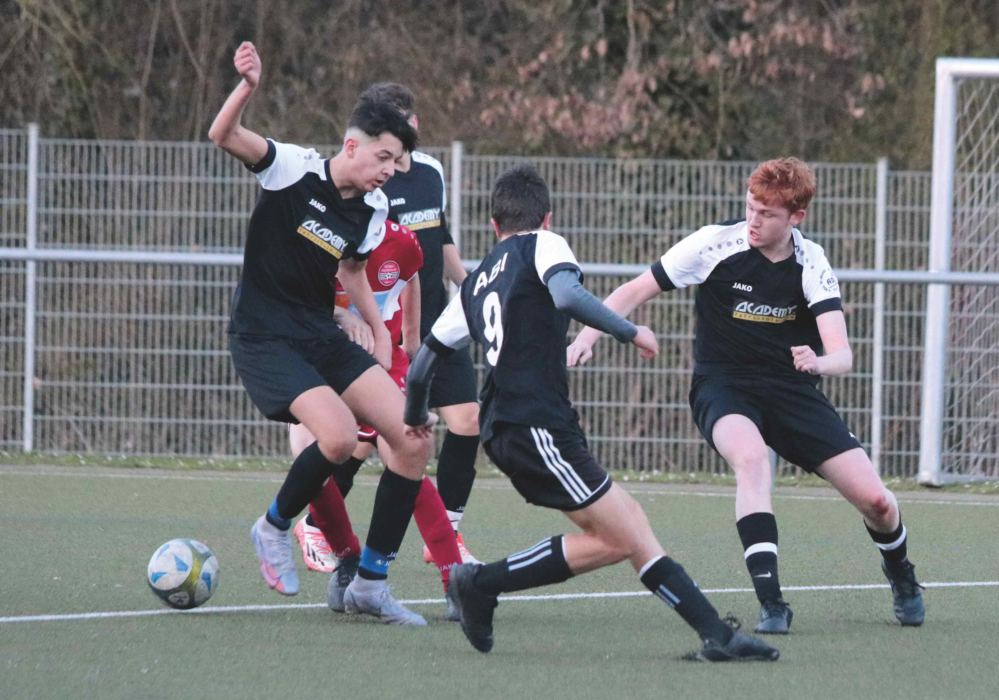

SGM-ABI A-Junioren: 1. Heimspiel
SGM ABI : Türkspor Neckarsulm (5:2)
 Zu unserem ersten Heimspiel hatten wir die A-Junioren der Türkspor Neckarsulm zu Gast bei uns in Beilstein. Ein umkämpftes Spiel mit dem glücklichen Sieger SGM ABI. Zur Halbzeit gingen beide Mannschaften mit einem 1:1 unentschieden. Es fielen für beide Seiten je ein Eigentor. Auch wenn die spielerische Überlegenheit mit der zweiten Hälfte zunahm, so äußerte es sich nicht sofort aufs Ergebnis. Wir gingen zwar mit 2:1 in der 70. Minute wieder in Führung doch bekamen in der 71. gleich das 2:2. Aber unsere Jungs haben nicht aufgegeben und bis zur letzten Minute gekämpft so dass wir dann in der 87., 88. und 90. Minuten jeweils ein Tor erzielen konnten. Dadurch haben wir am Ende mit einem 5:2 das Spielfeld verlassen.
Für die SGM ABI spielten: Jannis, Lukas, Romeo, Ryan, Aaron, Andrew, Talha, Finn, Philipp (1x), Enis, Eyüp (1x), Nico (1x), Ehil (1x), Noah und Robin. Unser nächster Gegner ist die Aramäer Heilbronn, wir sind zu Gast in Sontheim.